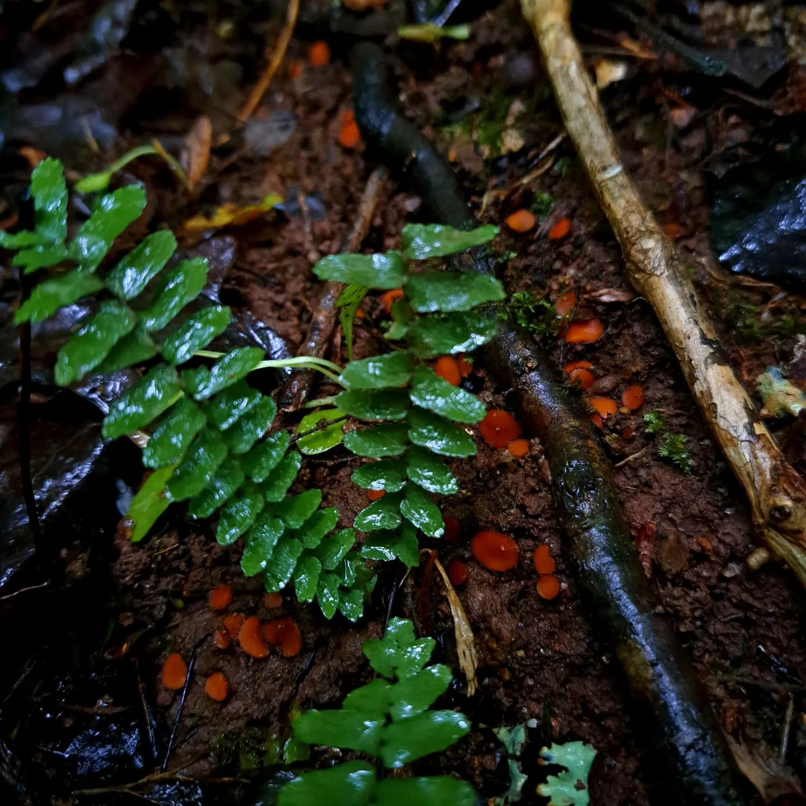
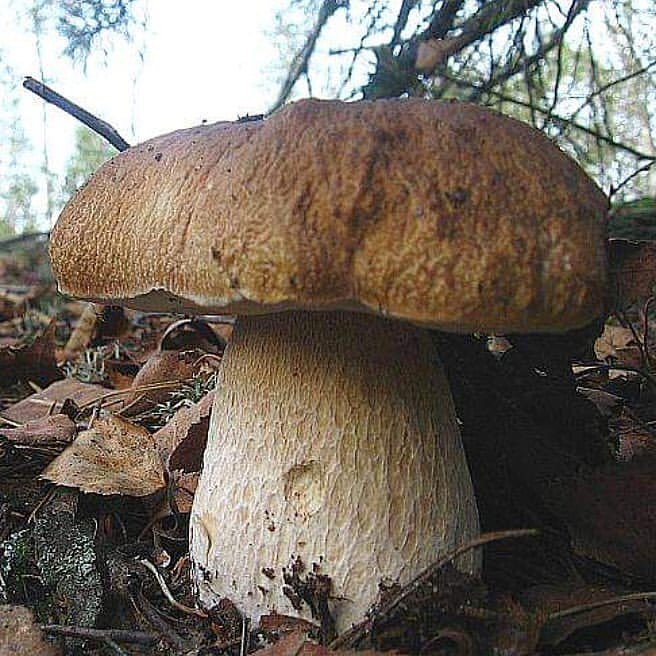
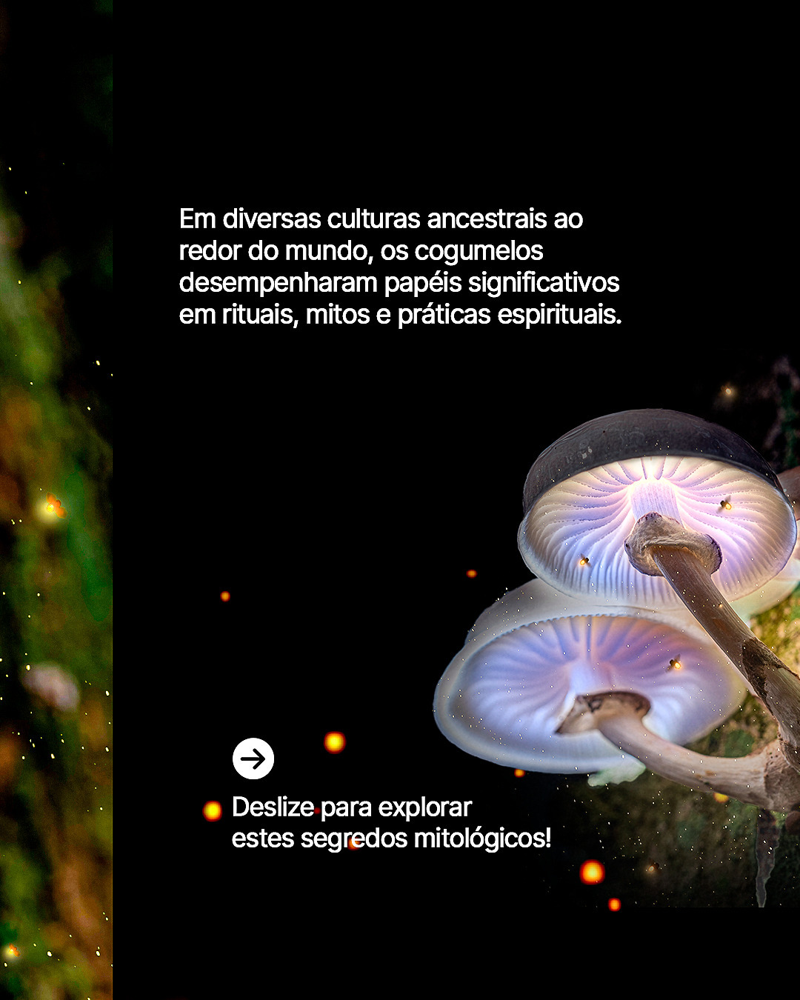
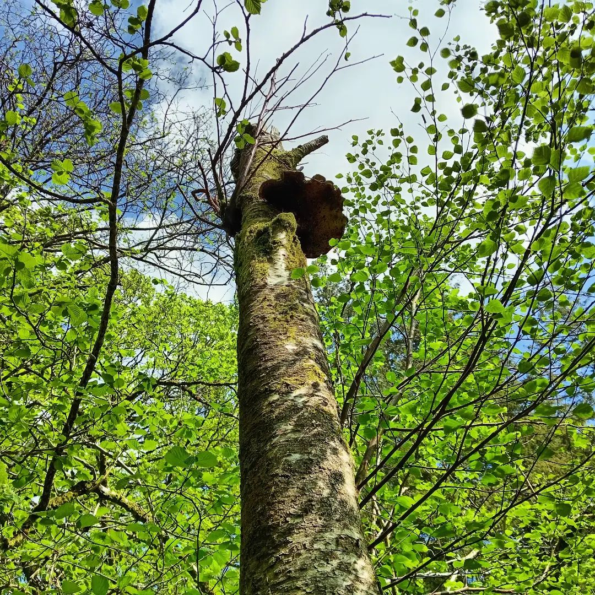

Natural (983 posts)
Posts depicting wild fungi in their natural environment with scientific or educational captions.

Labels: Shoe, Leg, Sneakers, Walking Shoe, Outdoor Shoe

Labels: Underwater, Marine biology, Animation, Jungle, Aquatic plant, Fictional character, CG artwork, Swamp, Fungus, Seaweed, iPhone 3G, iPhone 5, iPhone 4, Mushroom, Mobile Phone, iPhone SE, iPhone, iPhone 6S

Labels: Recreation, Fun, Inflatable, Summer, Leisure, Vacation, Outdoor recreation, Holiday, Swimsuit, Swimsuit Top, bottom, Water, Swimsuit

Labels: Fungus, Nature, Leaf, Mushroom, Ingredient, Brown, Groundcover, Bolete, Agaricaceae, Edible mushroom, Oyster Mushroom, Penny Bun, Russula integra, Mushroom, King trumpet mushroom, Polyporales, Auriculariales

Labels: Fungus, Pezizales, Agaricomycetes, Polyporales

Labels: Trunk, Woody plant, Fungus, Chaga mushroom, Birch family, Northern hardwood forest

Labels: Textile, Creative arts, Plush, Craft, Patchwork, Pattern, Stitch, Linens, Polar Fleece M, Woven fabric

Labels: Leaf, Green, Vegetation, Groundcover, Vascular plant, Plant stem, Bryophyte, Valdivian temperate rain forest, Fern, Liverworts

Labels: Fungus, Mushroom, Bolete, Ingredient, Penny Bun, Medicinal mushroom, Agaricaceae, Edible mushroom, Agaricomycetes, Natural foods, Penny Bun, Russula integra

Labels: Fungus, Mushroom, Agaric, Agaricaceae, Medicinal mushroom, Creative arts, Design, Edible mushroom, Agaricomycetes, Sketch

Labels: Eyewear, Audio equipment, Glasses, Vision Care, Electronic device, Microphone, Outerwear, Spokesperson, Public address system, Microphone stand

Labels: Fungus, Mushroom, Ingredient, Bolete, Penny Bun, Edible mushroom, Agaricaceae, Medicinal mushroom, Natural foods, Agaricomycetes, Penny Bun, Russula integra, Mushroom, Lion's mane

Labels: Toy, Happiness, Woolen, Wool, Baby toys, Plush, Craft, Stuffed toy, Knitting, Crochet, Stuffed toy

Labels: Orange, Fungus, Mushroom, Ingredient, Natural foods, Bolete, Medicinal mushroom, Agaric, Agaricomycetes, Agaricaceae

Labels: Active Shirt, Fictional character, Graphic design, Mushroom, T-shirt, Shirt, Clothing, Hoodie

Labels: Fungus, Night, Graphic design, Mushroom, Science, Photo caption, Astronomy, Amsterdam, Online Casino

Labels: Wig, Toy, Doll, Sphere

Labels: Leaf, Branch, Natural environment, Green, Trunk, Forest, Twig, Woody plant, Nature reserve, Woodland

Labels: Fungus, Mushroom, Ingredient, Purple, Bolete, Edible mushroom, Agaricaceae, Medicinal mushroom, Natural material, Agaricomycetes, Mushroom

Labels: Fungus, Lion's mane, Collybia nuda, Mushroom, Benugo Bar & Kitchen at Warwick Arts Centre
+ 963 more posts